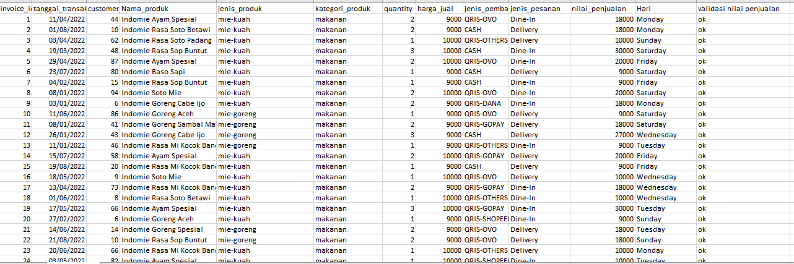
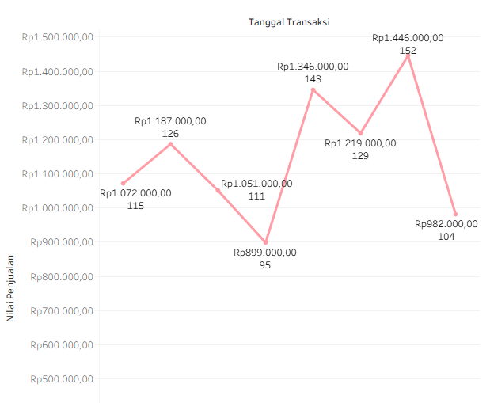

Analisis Penjualan Warmindo
2022
Merapikan 499 transaksi dengan Excel dan menyajikannya
dalam dashboard Tableau untuk melihat menu, hari, dan pola pembayaran yang menggerakkan omzet.

Ringkasan
Dataset berisi 499 baris transaksi penjualan sebuah warmindo selama Januari sampai Agustus 2022, dengan 18 varian menu dan 99 pelanggan. Warung kecil seperti ini biasanya hanya mencatat penjualan tanpa dianalisis, sehingga pemilik sulit tahu menu mana yang paling laku, kapan warung ramai atau sepi, dan bagaimana pelanggan membayar. Saya merapikan datanya di Excel, merangkumnya dengan pivot table, lalu menampilkannya di dashboard Tableau beserta rekomendasi bisnis.
| Peran | Data analyst (pembersihan, analisis, visualisasi) |
| Alat | Microsoft Excel (data cleaning, pivot table), Tableau |
| Data | 499 transaksi, 975 porsi terjual, total omzet Rp9.202.000, periode Januari–Agustus 2022 |
1. Membersihkan data dengan Excel
Data mentah tidak saya ubah langsung. Saya menyimpannya di sheet Penjualan warmindo,
lalu bekerja di sheet salinan data clean, sehingga data asli tetap utuh dan
setiap perubahan bisa ditelusuri.
| Masalah | Kondisi awal | Perlakuan |
|---|---|---|
| Penulisan nama produk tidak seragam | Ada yang ditulis indomie Kari Ayam dan Indomie Kari Ayam
|
Diseragamkan agar satu menu tidak terhitung sebagai dua produk di pivot table. Hasilnya 18 menu. |
| Tidak ada informasi hari | Hanya ada tanggal transaksi | Menambahkan kolom Hari dari tanggal transaksi untuk analisis pola
harian. |
| Nilai penjualan perlu diverifikasi | Nilai penjualan harus sama dengan harga jual × jumlah | Menambahkan kolom validasi nilai penjualan untuk memeriksa
kesesuaiannya di setiap baris. |
| Metode pembayaran terpecah | QRIS terbagi menjadi OVO, GoPay, DANA, ShopeePay, dan lainnya, selain CASH | Dikelompokkan menjadi QRIS dan tunai untuk melihat pergeseran ke pembayaran digital. |

Diatas adalah data cleaning yang saya lakukan di Excel
Dua keputusan yang saya anggap penting:
- Menyimpan data asli. Pembersihan hanya dilakukan di sheet salinan, jadi tidak ada informasi yang hilang diam-diam.
- Memvalidasi angka sebelum dianalisis. Kolom validasi memastikan omzet yang dilaporkan benar-benar berasal dari harga × jumlah, bukan dari input yang keliru.
2. Temuan analisis
Total omzet sebesar Rp9,20 juta dari 499 transaksi dan 975 porsi. Rata-rata nilai transaksi sekitar Rp18.441 (1,95 porsi per kunjungan). Variasinya antar bulan kecil, yaitu Rp17.574 sampai Rp19.640.
Omzet bergerak karena jumlah kunjungan, bukan besar belanja
Karena nilai per transaksi relatif stabil, naik-turunnya omzet bulanan lebih dipengaruhi banyaknya pelanggan yang datang:
| Bulan | Omzet |
|---|---|
| Januari | Rp1.072.000 |
| Februari | Rp1.187.000 |
| Maret | Rp1.051.000 |
| April | Rp899.000 |
| Mei | Rp1.346.000 |
| Juni | Rp1.219.000 |
| Juli | Rp1.446.000 |
| Agustus | Rp982.000 |
Puncak terjadi pada Juli (152 porsi dari 80 transaksi). Titik terendah terjadi pada April (95 porsi dari 49 transaksi), yang bertepatan dengan bulan Ramadan.

Diatas adalah tren omzet per bulan yang saya buat di Tableau
Temuan lain
- Menu terlaris: Indomie Rasa Soto Betawi (Rp727 ribu), Soto Banjar Limau Kuit (Rp701 ribu), dan Kari Ayam (Rp677 ribu) mendominasi pemasukan. Menu dengan omzet terendah adalah Soto Mie (Rp330 ribu).
- Mie kuah menyumbang sekitar 71% omzet (Rp6,57 juta), jauh di atas mie goreng (Rp2,64 juta).
- Pola harian: Selasa (Rp1,66 juta) dan Senin (Rp1,54 juta) paling ramai. Kamis paling sepi dengan omzet sekitar Rp990 ribu.
- Jenis pesanan: Dine-In (Rp4,87 juta) dan Delivery (Rp4,33 juta) hampir seimbang, jadi warung punya dua sumber pendapatan yang sama kuatnya.
- Pembayaran: Sekitar 80,7% transaksi memakai QRIS dan hanya 19,3% tunai.
Rekomendasi bisnis
- Jadikan menu terlaris sebagai andalan di papan menu dan promosi digital. Menu yang kurang laku bisa dibundling dengan minuman.
- Buat promo khusus di hari sepi (Kamis) dan bulan sepi (Ramadan), serta siapkan stok dan kapasitas lebih saat bulan ramai seperti Juli.
- Fokus menambah frekuensi kunjungan dan nilai belanja per transaksi, misalnya lewat paket hemat atau menu tambahan.
- Jaga kualitas makanan saat dikemas untuk delivery, dan tingkatkan kenyamanan area makan di tempat.
- Pastikan jaringan internet dan kode QRIS selalu lancar, dan pertimbangkan promo cashback bersama penyedia dompet digital.
3. Dashboard Tableau
Dashboard dibuat dari data hasil cleaning dan terdiri dari enam analisis:
- Performa produk: omzet per menu.
- Tren per bulan dan tren per hari.
- Total omzet dibandingkan rata-rata nilai transaksi per bulan.
- Jenis layanan pesanan (Dine-In dan Delivery).
- Preferensi metode pembayaran.
Keenam grafik disusun dalam satu story agar alurnya dari gambaran umum, ke detail, lalu ke rekomendasi.